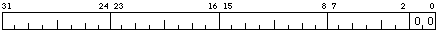
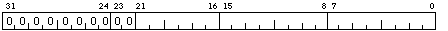
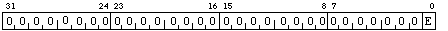

POBR holds the virtual address of the current processes P0 page table entries. The address must be long aligned (the low 2 bits must be 00) and must be in system space ( address >= 0x80000000 and address < 0xC0000000 ).

The P0LR contains the size of the current processes P0 page table in long words.
P1BR holds the virtual address of the current processes P1 page table entries. The address must be long aligned (the low 2 bits must be 00) and must have a value between 0x7f80000 and 0xBF000000. This is to ensure the page table entries are always in system space.
The P1LR contains the number of unused page table entries (each PTE is a long word) of the current processes P1 page table.

SBR holds the Real address of the system page table entries. The address must be long aligned (the low 2 bits must be 00).
The SLR contains the size of the System page table in long words.

-
E = Enable bit (Read / Write)